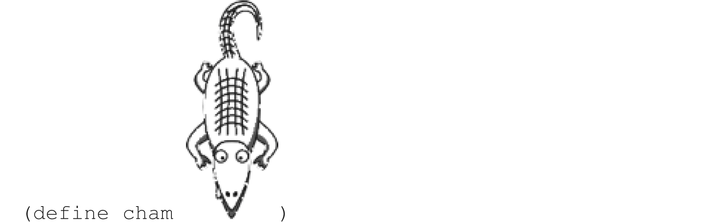

5.11 More Virtual Pets
In this section we continue our virtual zoo project from chapter 3.7. Specifically, the goal of the exercise is to combine the cat world program with the program for managing its happiness gauge. When the combined program runs, you see the cat walking across the canvas, and, with each step, its happiness goes down. The only way to make the cat happy is to feed it (down arrow) or to pet it (up arrow). Finally, the goal of the last exercise in this section is to create another virtual, happy pet.
Exercise 88. Define a structure type that keeps track of the cat’s x-coordinate and its happiness. Then formulate a data definition for cats, dubbed VCat, including an interpretation. 
Exercise 89. Design the happy-cat world program, which manages a walking cat and its happiness level. Let’s assume that the cat starts out with perfect happiness.
Hints (1) Reuse the functions from the world programs in chapter 3.7. (2) Use structure type from the preceding exercise to represent the state of the world.
Exercise 90. Modify the happy-cat program from the preceding exercises so that it stops whenever the cat’s happiness falls to 0.
Exercise 91. Extend your structure type definition and data definition from exercise 88 to include a direction field. Adjust your happy-cat program so that the cat moves in the specified direction. The program should move the cat in the current direction, and it should turn the cat around when it reaches either end of the scene.

The above drawing of a chameleon is a transparent image. To insert it into DrRacket, insert it with the “Insert Image” menu item. Using this instruction preserves the transparency of the drawing’s pixels.
When a partly transparent image is combined with a colored shape, say a rectangle, the image takes on the underlying color. In the chameleon drawing, it is actually the inside of the animal that is transparent; the area outside is solid white. Try out this expression in your DrRacket:
Exercise 92. Design the cham program, which has the chameleon continuously walking across the canvas from left to right. When it reaches the right end of the canvas, it disappears and immediately reappears on the left. Like the cat, the chameleon gets hungry from all the walking, and, as time passes by, this hunger expresses itself as unhappiness.
For managing the chameleon’s happiness gauge, you may reuse the happiness gauge from the virtual cat. To make the chameleon happy, you feed it (down arrow, two points only); petting isn’t allowed. Of course, like all chameleons, ours can change color, too: "r" turns it red, "b" blue, and "g" green. Add the chameleon world program to the virtual cat game and reuse functions from the latter when possible.
Start with a data definition, VCham, for representing chameleons.
Exercise 93. Copy your solution to exercise 92 and modify the copy so that the chameleon walks across a tricolor background. Our solution uses these colors:
but you may use any colors. Observe how the chameleon changes colors to blend in as it crosses the border between two colors.
Have some Italian pizza when you’re done.
Note When you watch the animation carefully, you see the chameleon riding on a white rectangle. If you know how to use image editing software, modify the picture so that the white rectangle is invisible. Then the chameleon will really blend in.